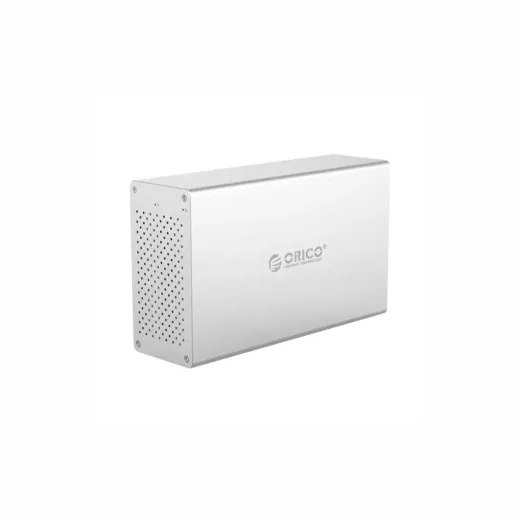
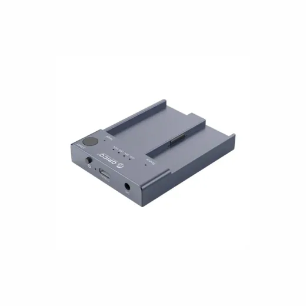
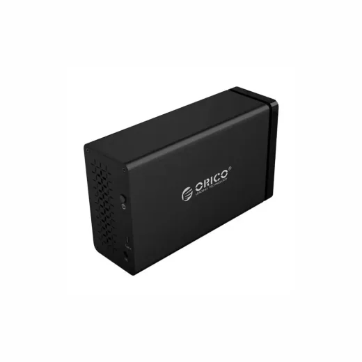

Inicio › Otros de tecnología y hogar

CAJA · Modelo WS200C3USSV
Caja SATA 3.5" Dual USB-C Orico WS200C3-US-SV
L 3,400
En Sycom
Precio en cada tienda
| Tienda | Precio | Antes | Disponibilidad | |
|---|---|---|---|---|
| Sycom | L 3,400 | — | Disponible | Ver en tienda › |
Precios referenciales tomados de cada tienda el 14 de noviembre de 2026. El precio válido es el que muestra la tienda al comprar.
Otros otros de tecnología y hogar CAJA

Caja M.2 NVME Clonar SSD USB-C Orico M2P2-C3-C-US-GY-BP 3MGL 3,600.01En Sycom Caja de Cable UTP Exterior Cat6 Vorttek VK-17005 NTGL 2,495.01En Sycom
Caja de Cable UTP Exterior Cat6 Vorttek VK-17005 NTGL 2,495.01En Sycom Caja de Cable UTP Exterior Cat5E Vorttek VK-17004 NTGL 2,195.01En Sycom
Caja de Cable UTP Exterior Cat5E Vorttek VK-17004 NTGL 2,195.01En Sycom Caja de Cable UTP Cat6 Vorttek VK-17000 NTGL 1,850.01En Sycom
Caja de Cable UTP Cat6 Vorttek VK-17000 NTGL 1,850.01En Sycom
Caja Sata 3.5" Dual Raid Usb-c Orico NS200RC3-US-BK-BPL 5,000En Sycom Caja de Cable UTP Cat5e Vorttek VK-17003 NTGL 1,650En Sycom
Caja de Cable UTP Cat5e Vorttek VK-17003 NTGL 1,650En Sycom Caja M.2 Nvme SSD Dual Usb-c Orico CM2C3-2SN-GY-BPL 1,595En Sycom
Caja M.2 Nvme SSD Dual Usb-c Orico CM2C3-2SN-GY-BPL 1,595En Sycom Caja SATA 2.5 3.0 Dual Disk Orico 2259U3-US-CR-BPL 1,350En Sycom
Caja SATA 2.5 3.0 Dual Disk Orico 2259U3-US-CR-BPL 1,350En Sycom